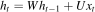
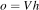
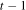
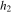
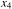
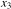
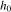

(Terence teaches in University of San Francisco's MS in Data Science program. You might know Terence as the creator of the ANTLR parser generator.)
Contents
In the previous section, we trained an RNN by updating model parameters W, U, V after each input record (each word). The training loop computed the loss for a single record and used that to estimate partial derivatives. Those “noisy” partial derivatives (computed by backpropagation) were then used by the gradient descent optimizer to tweak the matrices. The goal of this section is to make a more efficient version of the training loop by (1) performing backpropagation less frequently and (2) using PyTorch vector operations (that are implemented in C++) to avoid Python a for-loop.
The idea of breaking up a training set into chunks is an important implementation detail, but keep in mind that it really has nothing to do with the concept of an RNN. The words in our training set are very short so we can focus on slicing our training set in between input records. If our input records were long documents instead of just simple words, we'd likely need to slice up even the individual records, not just between records. Long documents, as we'd use for a language model, complicate our lives and I'll leave that for another article. Or, you can check out section “Maintaining the State of an RNN” in fastai Chapter 12 or “The need for truncated backpropagation” in Trask Chapter 14.
If computing partial derivatives is expensive, we want to avoid doing it after computing the h vector for each word. The subset of input records we use to compute the loss is called a minibatch. The size of the minibatch is a knob we can turn: the larger the batches, the more accurate our partial derivative estimates, but our validation loss is likely to be higher. Here's a fun tweet and link to supporting evidence from LeCun:
To see how minibatching works, let's add kat, the Afrikaans word, to our classification problem so we have two batches of size two (the character vocabulary is the same):

To process records in batches instead of one at a time, we need a triply-nested loop instead of a doubly-nested loop. Previously we had an outer loop that iterated through each training record and an inner loop that processed the characters of a word. We still have the same inner loop, but we need to split the outer loop into one that advances from batch to batch and a nested loop that iterates through each batch:
| SGD training loop | Non-vectorized minibatch SGD training loop |
|---|---|

|

|
(Of course, the real implementation would require yet another outer loop to iterate over multiple epochs.)
I've highlighted the inner loop, which is identical for both cases and I have circled the key difference in the loss computation. Instead of computing a single loss for a single h vector, we are summing up the losses for a batch of h vectors.
The effect of minibatching is to delay updating the matrices representing the parameters of our model until after we've seen more than a single input record. This gives us a more accurate gradient and is a little more efficient because were not computing gradients for every input record. Because the gradient is more accurate, we can often afford (and often need) a higher learning rate than the one we use for single record gradient descent. You can check out the full implementation in the minibatch SGD notebook.
Reducing how often we compute partial derivatives increases training speed, but the biggest speed bump comes from converting the loop that iterates through a batch into vector operations.
In order to remove the batch iteration loop, let's consider the complete set of computations we need to perform to complete a single epoch. Here they are for batch one:

and batch two:

We've been processing the input word by word, even in the batched non-vectorized case. Graphically, that means we process from left to right all of the computations for cat then move onto the next word, chat etc... This makes sense because there is a dependency between the partial h results. Recall that our recurrence relation associated with the RNN is  and then we run the last h into  to get the output vector holding the predicted probabilities of the target languages. Here's a depiction of the dependencies for the cat computations:

To get the right answer for each word, that means computation must proceed left to right, one h computation after the other. That dependency, however, only exists within a word between time  and t. So, we are free to process all words within a batch simultaneously, as long as we respect the time dependency. In other words, we process all characters at the same time position, t, simultaneously for all words in the batch. Here's the first batch of computations again, this time with blue boxes around the computations at time t and dashed arrows indicating the sequence of operations:

First, we compute for the first letter, “c”, of both cat and chat. Next, we compute  based upon and the second characters, “a” and “h”, and so on. The only wrinkle is what happens at the fourth character because cat only has three letters, but we'll deal with that later. For now, let's pretend that all words are the same length and figure out how to process the components of a batch.
The biggest difference from the non-vectorized minibatch version is that we need to track a different h for each word in the batch simultaneously; remember that the h vector is a representation in some high dimensional space for a specific word. If we used a single h vector, we would get a muddied vector that tried to represent all words. For convenience, let's pack all of the h vectors as columns in a matrix called H. Then, W@H is matrix-by-matrix multiplication, yielding a matrix rather than a vector, as it did in the non-vectorized version.
Similarly, to simultaneously process the character vectors from all words at step t, we multiply U by batch input matrix B. B has character vectors as columns, one for each batch word. Constructing matrix B requires further explanation, let's do that after looking at the code; for now, just assume B has len(vocab) rows and batch size columns.
Imagine that I want to apply W to three vectors a, b, and c. That's the same as combining those three vectors as columns in a matrix and applying W:

The resulting matrix has columns Wa, Wb, and Wc.
The RNN model with H as a matrix and batch input matrix B looks like this:

The output is now also a matrix, not a vector, and each column represents the output vector for a specific word in the batch. (Normally, I would capitalize o to indicate it's a matrix, but that looks too much like a zero so I'm leaving it is lowercase.) Because I like the first dimension to represent the different input records, I take the transpose of output matrix o so that it has batch size rows and columns for each target class probability. Ok, enough pictures. Let's look at the code differences in the SGD loop:
| Non-vectorized minibatch SGD loop | Vectorized minibatch SGD loop |
|---|---|

|

|
Instead of processing batches word by word, now, we grab the entire batch as matrix batch_X then use batch_X[:,t] to extract the character vectors at a particular step t. The cross_entropy() function computes the loss for each word in the batch by comparing row i of output matrix o with the correct target in batch_y[i]. The function return returns the average loss across all words in the batch.
Converting a loop to a vector operation is tricky until you get the hang of it, so let's make the term vectorization more concrete. Imagine that we wanted to add two lists of numbers (vectors) a and b to get c:
| Loop implementation | Addition of two vectors |
|---|---|

|
for i in range(len(a)):
c[i] = a[i] + b[i]
|
If those vectors were tensors (or numpy arrays), we could use just c = a + b, thanks to Python operator overloading. In fact, we can even perform a vector operation on a slice of the vectors: a[2:]+b[2:] is [9, 3]. For our purposes, that's all there is to vectorization.
Vector operations are usually easier to type than loops but, more importantly, vector operations execute more quickly than Python loops. This is because either the vector operations are implemented in C++, and C++ is dramatically faster than Python at looping, or implemented in Cuda that runs in parallel on the GPU. You can think of vectorization as a means to tell PyTorch or other tensor library what can be computed simultaneously.
We know that X_train is a list of lists containing the list of characters for each word in the training set. X_train[p:p+batch_size], therefore, just grabs the lists for words in the current batch, such as the first batch:
The only mysterious part is what we are doing with the onehot_matrix() function, which leads us to the final important implementation detail for vectorized minibatching.
To figure out the appropriate data structure to represent our training set during computation, let's take a look at all character vectors associated with the complete training set:

The most convenient single entity that aggregates all of those vectors is a three-dimensional matrix. Each row will represent a word, each column will represent a character, and the final dimension (going into the screen) will represent the one-hot encoding. To create that matrix, flip the column one-hot vectors representing characters so they are going back into the screen, then stack them up, one on top of the other. Because the words are of different length, and tensors all need to have the same length, we need to pad missing characters with zero one-hot vectors up to the max word length. The result is the right-padded 3-D matrix you see here on the left:
| Right-padded one-hot matrix | Left-padded one-hot matrix |
|---|---|

|

|
Unfortunately padding on the right screws up our computation. To see how, let's look at the recurrence relation for a single one-hot vector again, ignoring the nonlinearity as is not relevant to this padding discussion:
After the final letter in cat, my initial reaction was that xt as the zero vector would not alter the ht vector, so padding on the right wouldn't be a problem. It turns out that's not correct. If we make  and zero vectors, the recurrence relation ends up applying W to twice, but we want to stay the same at steps 4 and 4. Notice that would not be the same thing as :
The way around this is simple but looks weird: we left pad the matrix instead of right padding. See the diagram above on the right. This is how left padding affects the recurrence relation for cat:

where one-hot vectors for the letters of cat are , , and . Because  starts out as the zero vector and all of the input vectors are zero, , , and are all the zero vector as well.
So, the onehot_matrix() function takes a batch or the entire training set and converts it to a 3D matrix that aggregates all of the character one-hot vectors for all of the words. Returning to the vectorized SGD loop in the previous subsection, let's visualize what's happening with the following statement:
The : in batch_X[:,t] spans all words in the batch and the t refers to the step. So, this gives us all characters at step t across all words. Since we did not mention the third dimension, the one-hot vector dimension, we get the entire one-hot vector for each character position. The resulting 2D matrix has dimensions batch size by vocabulary length, which means that the one-hot vectors are horizontal not vertical. For the matrix algebra to work out, we need those one-hot vectors within the matrix to be vertical as we've done in the past. That's why we take the need the transpose, batch_X[:,t].T.
And there you have it. Those are all the details I had to figure out in order to implement an efficient RNN using matrices instead of neural network layers as raw components. Our initial non-vectorized SGD training loop, which updated model parameters after computing loss for each word, encompasses all of the RNN key ideas. For a realistic RNN, however, only the vectorized version is fast enough. The vectorized version requires minibatching and all of the machinery required to get the 3D padded batch matrix set up properly. As usual, the theory is straightforward but actually building a practical RNN requires a much deeper understanding of the details.
You can check out the full implementation in the vectorized minibatch SGD notebook and the similar GPU-enabled vectorized minibatch SGD notebook.